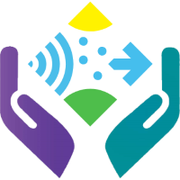

<ion-content class="sensifyWelcome">
    <ion-slides pager (ionSlideDrag)="slideMoved()">
        <ion-slide>
            <div class="slide">
                
                <h2 class="slide-heading"> Welcome to Sensify</h2>
                <p class="slide-paragaph" style="padding: 20px;">Intuitive, lightweight and awesome.<br>We bring OSM
                    into your life.</p>
                <button id="toHomePage" (click)="toHomePage()" style="background-color: transparent; border-color: rgb(12, 129, 168); border: 2px solid rgb(52, 153, 187); border-radius: 25px; line-height: 2;">Take me to Sensify</button>
            </div>
        </ion-slide>
        <ion-slide>
            <div class="slide">
                
                <h2 class="slide-heading">Smart SenseBox Selection</h2>
                <p class="slide-paragaph" style="padding: 20px;">Sensify connects you to the closest SenseBox. <b>Automatically.</b></p>
                <button class="toHomePage"(click)="toHomePage()" style="background-color: transparent; border-color: rgb(12, 129, 168);  border: 2px solid rgb(52, 153, 187); border-radius: 25px; line-height: 2;">Take me to Sensify</button>
            </div>
        </ion-slide>
        <ion-slide>
            <div class="slide">
                
                <h2 class="slide-heading">Data-Verficaton</h2>
                <p class="slide-paragaph" style="padding: 20px;">Sensify preprocesses OSM data so you always stay on
                    the right track.</p>
                <button class="toHomePage" (click)="toHomePage()" style="background-color: transparent; border-color: rgb(12, 129, 168);  border: 2px solid rgb(52, 153, 187); border-radius: 25px; line-height: 2;">Take me to Sensify</button>
            </div>
        </ion-slide>
        <ion-slide>
            <div>
                
                <h2>Push-Notification</h2>
                <p class="slide-paragaph" style="padding: 20px;">No need to open Sensify every five minutes. We
                    implemented Push-Notification, making your life just a little bit easier.</p>
                <button class="toHomePage" (click)="toHomePage()" style="background-color: transparent; border-color: rgb(12, 129, 168);  border: 2px solid rgb(52, 153, 187); border-radius: 25px; line-height: 2;">Take me to Sensify</button>
            </div>
        </ion-slide>
        <ion-slide>
            <div>
                <button id="toHomePage" (click)="toHomePage()" style="background-color: transparent; border-color: rgb(12, 129, 168);  border: 2px solid rgb(52, 153, 187); border-radius: 25px; line-height: 2; font-size:calc(30px + 1.5vw);"><b>Ready. Set. Sensify?</b></button>
            </div>
        </ion-slide>
    </ion-slides>
</ion-content>